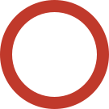
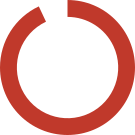

In 2016 the Logistics Cluster started implanting its new three year strategy. The strategy puts partnership and collaboration at its core.
The Logistics Cluster community aims to meet humanitarian needs by supporting national logistics preparedness in key disaster-prone countries, engaging with stakeholders from different sectors to leverage their capacity, and systemically sharing and implementing best practices.
The 2016-2018 Logistics Cluster strategy was designed through a participatory process led by a working group comprised of thirteen organisations, including those that have been participating to the Logistics Cluster Global Meetings.
Year in Review 2016

Partnerships
In 2016 the LET supported the disaster response operation in Haiti with:
 155 mt
Air freight
155 mt
Air freight
 2,000 m2
Storage space
2,000 m2
Storage space
 640 mt
Shipping capacity
640 mt
Shipping capacity
The Logistics Emergency Team (LET) is composed of some of the largest global logistics and transportation companies: Agility, Maersk and UPS. They work together to support the Logistics Cluster in providing support to the humanitarian community during emergency response.
The core principle of the LET partnership is to combine local knowledge and resources of the commercial logistics industry to provide more effective and efficient disaster relief. The LET companies provide pro-bono assets and services and deploy highly trained logistics experts to join the Logistics Cluster's staff for the disaster response operations. The LET has supported the humanitarian community with logistics capacity and expertise during 12 emergency responses.
The LET also assists in improving response preparedness by collecting information for Logistics Capacity Assessments (LCAs) and country-specific preparedness measures. The LET has so far supported 7 preparedness projects.
In 2015 LET companies have been working with the Logistics Cluster to provide assistance in preparedness projects including mapping of ocean freight routes, air freight hubs, support with collection of data for LCAs and bilateral engagement with Logistics Cluster partners for Pandemic Preparedness.
Complex protracted emergency
November 2013
Logistics Cluster Activation 2.2 million
people in need of humanitarian assistance
2.2 million
people in need of humanitarian assistance *[OCHA, November 2016]
 70
IM products published
70
IM products published
 24
Coordination meetings
24
Coordination meetings
Central African Republic (CAR)
The Logistics Cluster has been playing an important role in supporting organisations to identify gaps and optimise the use of resources available at regional and local levels.
Due to insufficient funding, the Logistics Cluster has been operating with minimal staff throughout 2016, restricting the effectiveness of critical coordination efforts and the capacity to provide real-time information and data to the humanitarian community.
Despite these challenges, the Logistics Cluster has been providing significant support to road and airstrip rehabilitation projects carried out by ACTED and Atlas Logistique/Handicap International respectively.
Additionally, the cluster is supporting the organisation of common cargo transport, as well as common storage services in Bangui and the provinces of Bossangoa and Kaga Bandoro, benefitting more than 50 humanitarian organisations across the country.
The Logistics Cluster has also been producing and sharing updated information management products crucial to ensuring effective coordination, including information on services offered by organisations such as Aviation Sans Frontière (ASF), ACTED, Premiere Urgence–Aide Medicale Internationale, Atlas Logistique/Handicap International and on how to access them.
$2.7 million
requirement
$1.9 million
received
additional US$ 671,000 were received on 21 November 2016
68%
funded
Complex protracted emergency
November 2008
Logistics Cluster Activation 7.5 million
people in need of humanitarian assistance *[OCHA, 2016]
75
IM products published
34
Coordination meetings
645 mt
Air transport
2,325 mt
Road transport
DEMOCRATIC REPUBLIC OF CONGO (DRC)
The delivery of relief items to vulnerable populations in the DRC is deeply affected by the challenges related to covering a vast geographical area with limited logistics infrastructure and networks, often in poor condition, paired with growing insecurity and conflict.
The Logistics Cluster is operational in Kinshasa and in the provincial capitals of Bukavu, Goma, Bunia, Kalémie and Lubumbashi to coordinate the logistics response and to provide critical information improving access and reach to the affected populations.
Shortage of funding has limited the Logistics Cluster intervention in DRC. The cluster has therefore focused on supporting and coordinating partners activities, such as the infrastructure projects carried out by organisations such as UNOPS and ACTED, by which more than 560 km of roads and 50 bridges have been rehabilitated, air transport made available by UNHAS and ECHO and road transport by Handicap International.
In order to strengthen the government and the humanitarian community’s emergency preparedness measures and contingency plans, the Logistics Cluster has trained more than 480 people from 169 organisations in GIS data collection and analysis, hence supporting the development of a broader and more accurate record of the infrastructure in the DRC.
In addition, the Logistics Cluster has been working in close collaboration with the North Kivu Department of Civil Protection, regional government authorities, the Goma Volcanic Observatory and the humanitarian community to build institutional capacity in disaster response and mitigation.
$1.2 million
requirement
$430 thousand
received
37%
funded
Earthquake
April 2016
Logistics Cluster Activation 720 thousand
people in need of humanitarian assistance *[UN and Government of Ecuador, April 2016]
60
IM products published
21
Coordination meetings
2,765 m3
Storage
113 mt
Air transport
495 mt
Road transport
Ecuador
The Government of Ecuador lead the emergency response following the 7.8 magnitude earthquake that hit the central coast of Ecuador on 16 April 2016, killing over 650 people, injuring thousands and causing extensive damage to buildings and infrastructure.
The Logistics Sector has been supporting relief efforts by establishing logistics hubs in Manta, Pedernales and Quito where storage capacity was made available by WFP for interagency cargo including Education, WASH, Shelter and Non Food Items (NFIs), Camp Management, Protection and Health sectors and office spaces to facilitate the operations and eventually provide short-term working space to organisations.
The United Nations Humanitarian Response Depot (UNHRD), a common service managed and provided by the World Food Programme (WFP), supported the emergency response at the onset of the operation, transporting relief items on behalf of World Vision International, Catholic Relief Services, AECID, WFP and the Ministry of Foreign Affairs Panama.
During the first month of the emergency response, the Logistics Sector coordinated humanitarian cargo dispatches, from Centro Logístico de Asistencia Aumanitaria (CELAH) logistic hub to emergency facilities in Pedernales and Manta. In addition, the Logistics sector delivered Mobile Storage Units (MSUs) and other equipment to hubs in Pedernales and Manta.
$756 thousand
requirement
$600 thousand
received
79%
funded
Drought
March 2016
Logistics Cluster Activation 10.1 million
people in need of humanitarian assistance *[OCHA, March 2016]
148
IM products published
28
Coordination meetings
54,600 m3
Storage
662 mt
Road transport
ETHIOPIA
In late 2015 and early 2016, Ethiopia experienced one of its worst droughts in decades.
Under the National Disaster Risk Management Commission (NDRMC), WFP, as the global lead agency for the Logistics Cluster, has been working together with the Government of Ethiopia (GoE) and the humanitarian community to identify logistics gaps and bottlenecks and propose mitigating activities to ensure an effective response. Within this framework, the Logistics Cluster seconded seven logistics advisors to the NDRMC to provide support and advice on different aspects of the supply chain.
The Logistics Cluster supported the NDRMC facilitating the transport of non-food items and augmenting storage capacity to assist with the large volume of humanitarian cargo arriving in country.
As of December 2016, the Logistics Cluster has erected 117 MSUs in 90 locations around the country, achieving 100% of the target for storage augmentation on behalf of the government and the humanitarian community.
The Logistics Cluster also facilitated the availability of financial resources on behalf of the NDRMC to secure a temporary surge in qualified staff. A total of 1,002 staff, including storekeepers and data entry clerks have been recruited to support the response. Training programmes have been offered to more than 600 newly recruited NDRMC staff and to the humanitarian partners on supply chain management, MSU erection and warehouse management.
$10.8 million
requirement
$10.8 million
received
100%

funded
Cyclone Winston
February 2016
Logistics Cluster Activation 350 thousand
people in need of humanitarian assistance *[OCHA, April 2016]
35
IM products published
11
Coordination meetings
Fiji
In response to category 5 Tropical Cyclone Winston which struck Fiji in February 2016, the Logistics Cluster supported the Fiji National Disaster Management Office (NDMO) and humanitarian community with logistics coordination and information management in an advisory role. The Logistics Cluster, on permanent activation through the Regional Pacific Cluster System, deployed dedicated staff to facilitate logistics coordination, information management activities and identify logistics gaps.
In support of the NDMO and Fiji National Cluster System, OCHA and the Logistics Cluster implemented a system to consolidate and streamline requests from the humanitarian community for use of military assets in country. In addition, support was given to the NDMO to establish a system to track relief imports, monitoring the quantity of relief goods arriving in country by air and sea to support logistics planning.
$209 thousand
requirement
$209 thousand
received
100%
funded
Hurricane Matthew
October 2016
Logistics Cluster Activation 2.1 million
people in need of humanitarian assistance *[OCHA, November 2016]
131
IM products published
35
Coordination meetings
1,565 mt
Storage
706 mt
Road transport
 2,237 mt
Sea transport
556 mt
Air transport
2,237 mt
Sea transport
556 mt
Air transport
Haiti
As Hurricane Matthew made landfall in Haiti on 4 October 2016, provoking severe damage to road and ICT infrastructure, housing and health facilities, the Global Logistics Cluster and WFP Haiti office put in place a swift emergency response.
The Logistics Emergency Team partners (Agility, Maersk, UPS), asked to support the response, provided pro bono airlifts and ocean freight and customs clearance support. Warehouse space, forklifts and trucks were also made available allowing for cost and time efficient reception and primary transportation of aid.
In the meantime, in coordination with the Directorate of Civil Defence (DPC) a Logistics Working Group was established with logistics and coordination hubs in Port au Prince, Les Cayes and Jéremie.
WFP, as the lead agency of the Logistics Cluster, coordinated access to US military air assets, and Netherlands Navy vessels, through the EU Civil Protection, for responders to reach inaccessible communities. WFP also made available a fleet of off-road trucks and contracted commercial air and sea services.
In November 2016 it was decided that Haiti will be the pilot country of the Logistics Cluster preparedness project. A Preparedness Officer was identified to lead activities starting in the first quarter of 2017.
$3 million
requirement
$3 million
received
100%
funded
Complex protracted emergency
May 2014
Logistics Cluster Activation 10 million
people in need of humanitarian assistance *[OCHA, November 2016]
72
IM products published
34
Coordination meetings
40,741 m3
Storage
Iraq
The surge in violence in Iraq has resulted in deteriorating humanitarian situation and in increasing access issues.
The Logistics Cluster has been coordinating with humanitarian organisations throughout the preparedness and planning phase for the Mosul operation, while continuing its engagement with the 2016 Humanitarian Response Plan.
Coordination meetings are held in Erbil, Dahuk and Baghdad to address logistics gaps and bottlenecks and coordinate the prepositioning and shipment of relief items.
Contingency to facilitate initial road transport for emergency humanitarian supplies, including through inter-agency convoys, has been put in place.
Warehouse capacity has been scaled up in the major hubs of Erbil and Dahuk, new hubs established in key locations, and additional strategic forward operating bases made available in, or in close vicinity to, displacement camps and emergency site locations to facilitate distribution.
Specialised logistics staff have been deployed and are planned as a contingency to strengthen coordination in the different hubs and to work on potential areas of constraint, such as border crossing and airports.
The Logistics Cluster has been liaising with authorities on behalf of the humanitarian community to raise issues of common concern and address logistics humanitarian access constraints. Notably the cluster has been working with humanitarian actors and authorities to establish a One Stop Shop to facilitate and streamline the customs clearance process for humanitarian cargo.
$5.5 million
requirement
$5.5 million
received
100%
funded
Conflict
August 2016
Logistics Cluster Activation 7 million
people in need of humanitarian assistance *[OCHA, November 2016]
34
IM products published
12
Coordination meetings
Nigeria
Conflict in northeast Nigeria has left widespread devastation; 1.7 million people displaced, depleted resources and severe access issues.
The Logistics Sector has been supporting the Government-led response by chairing Logistics Coordination meetings in Maiduguri since August 2016 and by consolidating and sharing up-to-date information about the operating environment to inform agencies’ decision making and ensure coordination.
The Logistics Sector is also supporting the Civil/Military coordination mechanisms established by OCHA by providing expertise in convoy consolidation and management and by promoting joint planning and streamlining of requests. Furthermore, the team in place in Maiduguri is offering guidance for cross border movements of aid entering from Cameroon.
In order to supplement the logistics capacities of the humanitarian organisations operating in northeast Nigeria, the Logistics Sector aims to facilitate access to multi-lateral common storage and cargo consolidation services in Maiduguri and Damaturu, at no cost to the user. Assessments to identify a suitable storage and transhipment facility are ongoing.
$868 thousand
requirement
$543 thousand
received
63%
funded
Complex protracted emergency
September 2014
Logistics Cluster Activation 5 million
people in need of humanitarian assistance *[OCHA, November 2016]
18
IM products published
5
Coordination meetings
Somalia
Acute humanitarian needs persist in Somalia. Vulnerability remain critical, due to continued insecurity and extremely low levels of socio-economic development resulting in limited ability to absorb recurrent shocks.
The Logistics Sector has been supporting the Government-led response by chairing Logistics Coordination meetings in Maiduguri since August 2016 and by consolidating and sharing up-to-date information about the operating environment to inform agencies’ decision making and ensure coordination.
Insecurity, lack of transport services and infrastructure hamper access and humanitarian operations.
A Coordination Cell was established in Nairobi to allow for liaison with other clusters and organisations and to channel operational information critical to decision making.
Complex protracted emergency
October 2010
Logistics Cluster Activation 5.1 million
people in need of humanitarian assistance *[OCHA, November 2016]
207
IM products published
92
Coordination meetings
12,160 m3
Storage
5,187 mt
Air transport
175 mt
Road transport
 1,278 mt
River transport
1,278 mt
River transport
7
Convoys coordinated
South Sudan
Ongoing insecurity and poor transport infrastructure leave the humanitarian sector with limited options to deliver lifesaving cargo to the displaced populations scattered across South Sudan.
The Logistics Cluster has been working to ensure the humanitarian community has access to otherwise inaccessible locations by coordinating air transport of emergency response cargo. Working through WFP Aviation, large quantities of relief cargo have been transported to hard-to-reach locations. Air services have been complimented by IOM which provides shunting services to and from the airstrips.
The Logistics Cluster has also been facilitating river transport via barge and access to common storage facilities, and has partnered with other humanitarian organisations such as ACTED, IOM and IRC for the management of the common warehouses.
The Logistics Cluster encouraged organisations to preposition cargo during the dry season, improving the efficiency of the humanitarian supply chain. Road convoy coordination played a key role in enabling the prepositioning and distribution of humanitarian cargo and reduced the risk exposure of organisations using road transport.
Regular coordination meetings are held in Juba and key locations, such as Bor, Bentiu, Malakal, Wau and Rumbek, to ensure effective interagency response by sharing relevant logistical information, identifying bottlenecks and finding appropriate solutions. The Logistics Cluster regularly participated in the Inter-Cluster Working Group and the Civil-Military Access Working Group, both chaired by OCHA.
$26 million
requirement
$26 million
received
100%
funded
Conflict
January 2013
Logistics Cluster Activation 13.5 million
people in need of humanitarian assistance *[OCHA, December 2016]
57
IM products published
44
Coordination meetings
19,115 m3
Storage
18,978 mt
Air transport
75,487 mt
Road transport
107
Convoys coordinated
Syria
To meet the needs of humanitarian partners operating in the Whole of Syria, the Logistics Cluster continues to provide support, including logistical coordination, information management, and capacity building through logistics training, as well as facilitating access to road and air transport, storage and transhipment services.
Under the framework of the Inter-Agency Humanitarian Convoys, the Logistics Cluster has facilitated the transport of relief items through convoys to hard-to-reach and cut-off areas, organised in close collaboration with OCHA and the Syrian Arab Red Crescent (SARC).
Airlift operations that began in July 2016, brought food, WASH, health and education supplies from Damascus to Qamishli on behalf of nine humanitarian organisations (ACF, GOPA, ICRC, IOM, UNFPA, UNHCR, UNICEF, WFP and WHO).
Coordination meetings held in Damascus, Amman, Gaziantep and Antakya, have been working to mitigate logistics bottlenecks and develop common solutions for improved cross-line, cross-border and regular humanitarian response.
Over 5,000 litres of WFP-procured diesel have been provided as donations for shelters and community centres, and 35,500 litres of diesel have been made available to the humanitarian community under cost recovery for operational purposes.
$12 million
requirement
$12 million
received
93%

funded
Conflict
February 2015
Logistics Cluster Activation 3.8 million
people in need of humanitarian assistance *[OCHA, November 2016]
29
IM products published
12
Coordination meetings
6,637 m3
Storage
10,310 mt
Road transport
22
Convoys coordinated
Ukraine
Access of humanitarian actors to people in need continue to be hampered by continuous insecurity, bureaucratic impediments, and logistic challenges.
The Logistics Cluster has been assisting humanitarian actors working in Ukraine by streamlining the complex procedures required for transport, advising on the required paperwork, facilitating access by providing a UN umbrella for organisations and coordinating humanitarian convoys.
The Logistics Cluster has been coordinating access to warehousing and cargo consolidation facilities in Dnipro (former Dnipropetrovsk) and to transport services to support the delivery of relief items to the Non-Government Controlled Areas.
$2.4 million
requirement
$2.2 million
received
91%
funded
Complex protracted emergency
June 2011
Logistics Cluster Activation 18.8 million
people in need of humanitarian assistance *[OCHA, November 2016]
133
IM products published
31
Coordination meetings
9,262 m3
Storage
800 m3
Air transport
13,940 m3
Road transport
13,912 m3
Sea transport
Yemen
Humanitarian organisations responding to the crisis in Yemen have been facing a number of logistical challenges that continue to impede their ability to deliver relief supplies.
To ensure timely and efficient emergency logistics response, the Logistics Cluster has been supporting inter-agency logistics coordination establishing hubs inside Yemen and in Djibouti and providing information management including mapping/GIS services.
Inside Yemen, the Logistics Cluster is coordinating access to common storage in Aden (640 m2), Hodeidah (640 m2) and Sana’a (320 m2), and from the same locations, overland transport. The cluster also facilitate access to WFP-managed fuel distribution points in these three locations, with 1,238,543 litres distributed in 2016.
Establishing presence in Djibouti, the Logistics Cluster has been coordinating cargo transport by sea from the Port of Djibouti to the Ports of Hodeidah and Aden. Since May, the Logistics Cluster also facilitates passenger sea transport to Aden. These services are made available through WFP chartered vessels and commercial vessels.
Making use WFP Aviation assets, the Logistics Cluster has also been facilitating cargo airlifts from Djibouti to Sana’a.
$11.5 million
requirement
$7.6 million
received
Additional funding has been received for port rehabilitation and for passenger sea transport, respectively 4.5 ML and 2.9 ML. These two projects are fully funded.
67%
funded